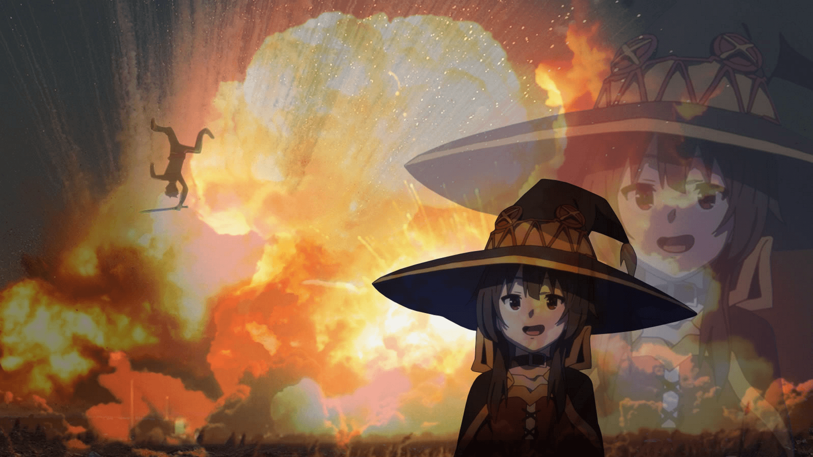
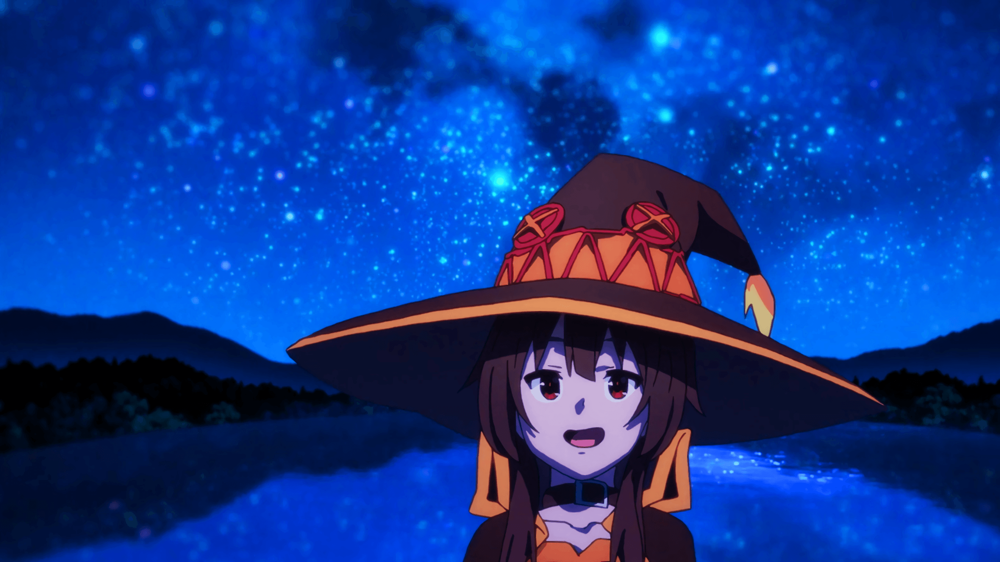
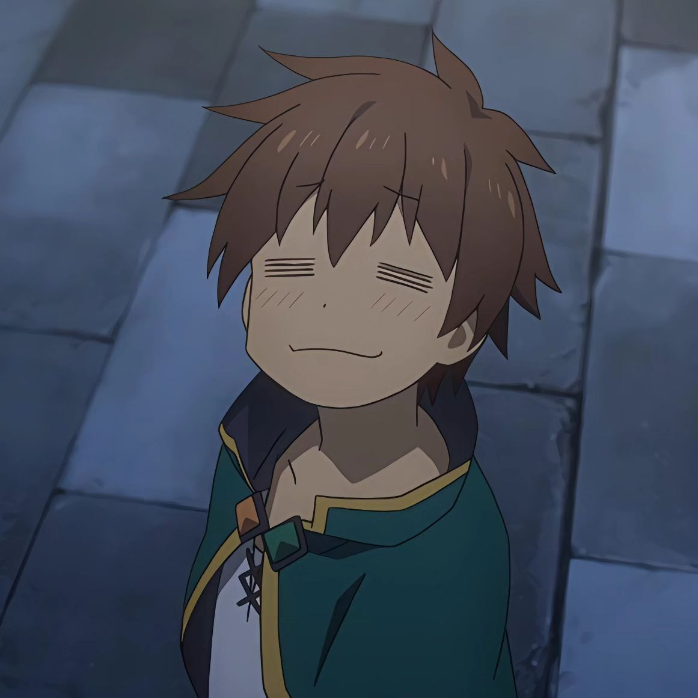
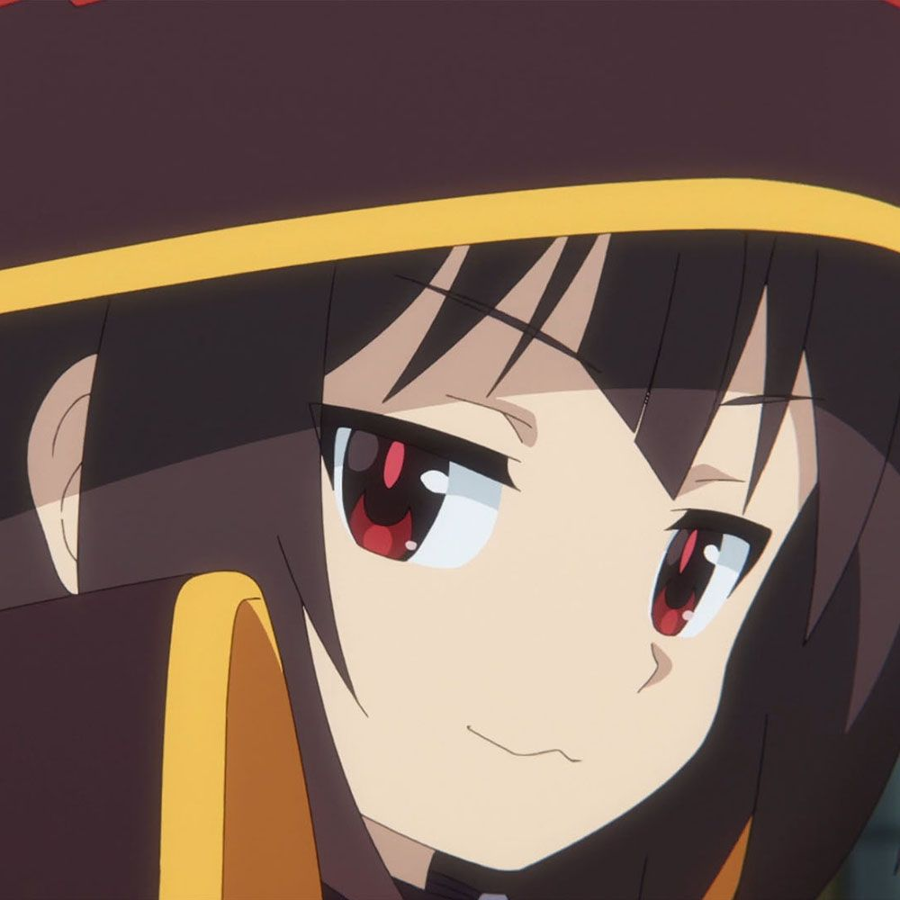
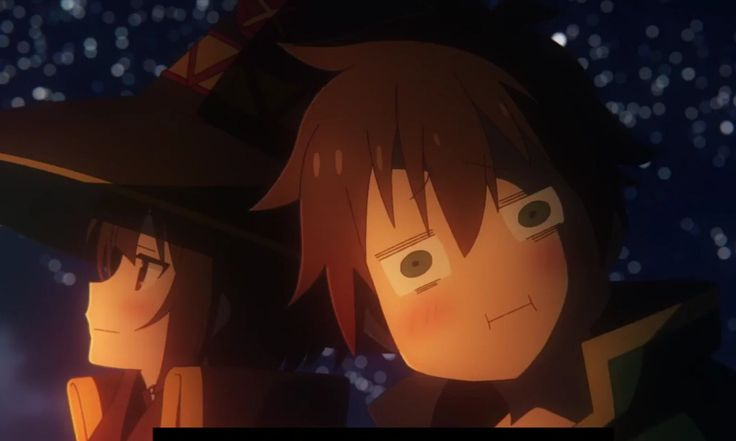
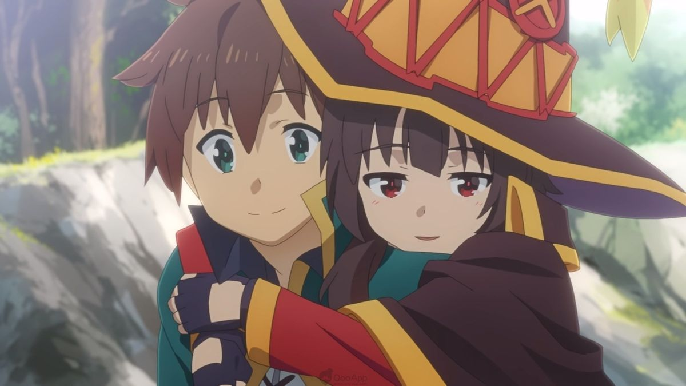
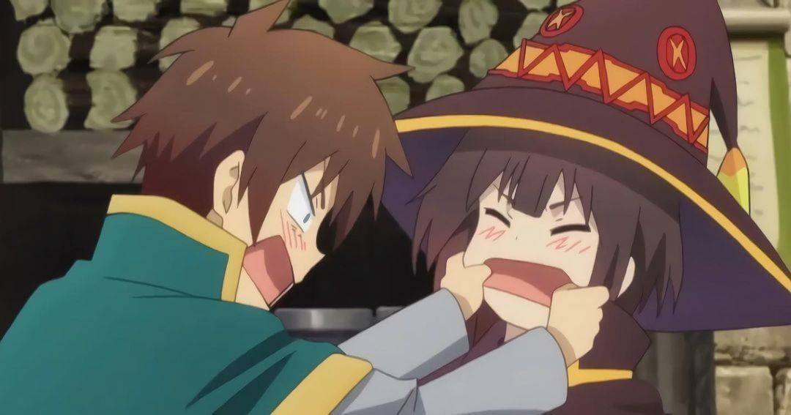
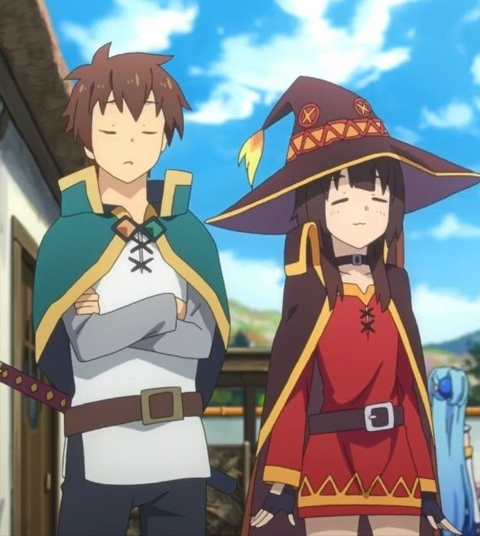

“Explosion is the ultimate magic!”
Megumin, Axel's Strongest Mage!
General Information
Megumin, when first introduced, is 14 years old, which is known for her obsession with explosion magic, which she can only use once a day due to its immense power. Despite this limitation, Megumin is determined to become the greatest explosion mage in the world.


Megumin has a powerful explosion magic, but she can only use it once a day. She is a member of the Crimson Demon Clan, which is known for their powerful magic and their love of explosions. Megumin is proud, confident, and loyal to her friends.
Explosion Showcase
Stats Board
Characteristics and Personality
Characteristics
- Member of the Crimson Demon Clan
- Wears a distinctive witch hat and robe
- Has a strong sense of pride and confidence
- Loyal to her friends and values their companionship
Personality
- Brave and determined
- Enthusiastic and energetic
- Can be impulsive and reckless
- Chuunibyou energy
- Competitive and childish
- Has a soft spot for cute things and is easily flustered
Relationship

Kazuma
Party Leader
- Luck: S
- IQ: S
- Patience: F
Hover a character to hear the party chemistry.
Relationship Meter

Megumin
Explosion Archwizard
- Power: SS
- IQ: B
- Cuteness: SSS
Memorable Events

Campfire
Kazuma had trauma from the last fight and wanted to become a monk. Kazuma and Megumin are having free time together.
Relationship Gallery



Megumin's Lore
Origin Story
Megumin was born into the Crimson Demon Clan, a group of powerful mages known for their affinity with explosion magic. From a young age, Megumin showed an exceptional talent for explosion magic, which led her to become obsessed with mastering it. Despite her clan's expectations for her to learn a variety of magic, Megumin was determined to focus solely on explosion magic, believing it to be the ultimate form of magic.
Family Background
Megumin's family is part of the Crimson Demon Clan, which is known for their powerful magic and their love of explosions. The clan has a long history of producing skilled mages, and Megumin's parents were no exception. They were both talented mages who specialized in explosion magic, and they encouraged Megumin to pursue her passion for it from a young age.
Major Achievements
Megumin has achieved numerous accolades for her mastery of explosion magic, including being recognized as one of the most powerful mages in the Crimson Demon Clan. She has also gained fame for her ability to create devastating explosions with incredible precision and control.
Personality Traits
Megumin is known for her enthusiastic and energetic personality. She is highly dedicated to her craft and often becomes deeply focused on her studies and practice of explosion magic. Despite her intense passion, she can be somewhat naive and impulsive, often acting on her emotions without fully considering the consequences.
How Well Do You Know Megumin?
Megumin's Story
Born in Crimson Demon Village
Megumin was born into the Crimson Demon Clan, a lineage of powerful mages with glowing red eyes and an affinity for advanced magic.
Chosen by Wolbach
A split-personality demon named Wolbach took an interest in Megumin and secretly taught her the foundations of Explosion magic at a young age.
Mastered Explosion Magic
Against her clan's wishes, Megumin dedicated herself entirely to Explosion magic, mastering it completely — at the cost of being unable to cast any other spell.
Arrived in Axel
Graduating at the top of her class, Megumin left the village in search of worthy enemies to test her explosion magic against, arriving in the beginner town of Axel.
Joined Kazuma's Party
Megumin joined Kazuma, Aqua, and Darkness — forming the most chaotic adventuring party in Axel. Daily explosions outside the city walls became her beloved routine.